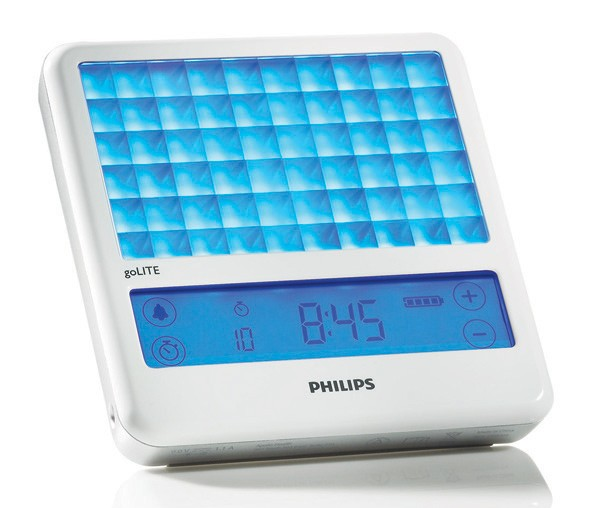

SEGURO Y EFICIENTE
El equipo que se ofrece resulta seguro y eficiente, cuando se utiliza siguiendo las instrucciones recomendadas por Philips, su fabricante.
Para algunas de sus funciones internas, el cuerpo humano necesita estímulos de luz, tales como los que produce el sol. Adecuadamente distribuidos, estos estímulos regulan el humor, el sueño, la energía, el apetito y la digestión.
Existen ciclos internos diarios, llamados “ritmos circadianos”, que algunas veces se desajustan, afectando el reloj biológico del cuerpo.
La vida moderna ha alterado de manera dramática los estímulos naturales que proporciona la luz. Un día cualquiera se puede iniciar antes de romper el alba, extendiéndose hasta bien entrado el anochecer.
Los días de trabajo se han ido prolongando y mucha gente se ha visto obligada a modificar sus horarios. Adicionalmente, la luz eléctrica ha permitido el perfecto desarrollo de actividades personales durante el transcurso de la noche.
Todos aquellos factores, han disminuido la capacidad natural del cuerpo para regular su reloj biológico.
Cuando el ritmo circadiano se desbalancea, el organismo produce hormonas y genera neurotransmisiones erradas a través del día.
Los resultados varían entre sentimientos de enfermedad, falta de sueño o carencia de energía.
Muchas personas sufren por la pérdida de energía y de humor, que pueden ir desde períodos cortos, pudiendo extenderse hasta por semanas. En algunos casos, estos sentimientos recrudecen en el invierno o en climas sombríos.

RESTAURANDO EL BALANCE
La tecnología BLUEWAVE, de última generación, contribuye a regularizar los ritmos circadianos, mediante la emisión de ondas de luz, en color y en una intensidad tal, que estimulen la producción de las sustancias cerebrales adecuadas.
BLUEWAVE afecta positivamente el funcionamiento del cuerpo, ordenando su reloj, permitiendo así que las propias señales actúen en el momento adecuado a través del día.
POSICIÓN DEL EQUIPO Y TIEMPO DE USO
El equipo se debe ubicar a una distancia de entre 50 y 70 centímetros de la cara, siendo perfectamente posible, a modo de ejemplo: leer, comer, trabajar en el computador, ver televisión, o practicar ejercicios físicos, mientras se utiliza.
La respuesta a la terapia de luz ocurre a través de la retina del ojo y no por la piel, como se pudiese pensar erróneamente.
Por otra parte, la persona no necesita mirar fijamente hacia la luz. Solo algunas miradas ocasionales, son suficientes para obtener los máximos beneficios, requiriendo entre 15 a 30 minutos de uso por cada día.
INDICACIONES
Depresiones; trastornos estacionales afectivos y anímicos; trastorno depresivo bipolar con resistencia a otro tipo de tratamientos; dismenorreas estacionales; depresión pre menstrual; jet-lag.